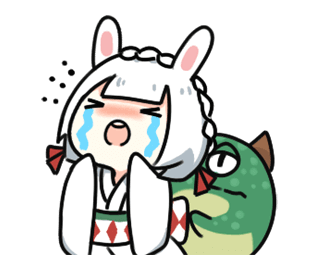
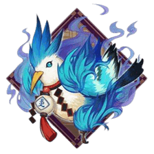
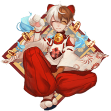

ざしきわらし
cv. 竹內順子
身為能為人們帶來福運的座敷童子
卻受盡了不公與磨難
臉上也很少會有笑容
終於遇到了疼愛她的“母親”
可她又選擇了錯誤的方式
來報答“母親”
所幸還有很長的時間
讓她去思考正確的生活方式
也有了友人
能與她分擔這份迷茫
式神介紹
故事
故事發生在日本平安時期的岩手縣。
有一戶人家，父親已經去世多年，只剩下母子倆相依為命。
母親靠替人洗衣謀取生計。兒子還算孝順，每天放學後，都會替母親捶捶腰，講講笑話，讓母親一展
難得的笑顏。
一天放學後，兒子替母親捶腰時，發現了如下的對話。
「媽媽，你不會背著我生了一個妹妹吧。」
「怎麼可能，光你一個我就養不起咯。」
「那麼角落裡坐著的那個小女孩，是誰家的孩子？」兒子指著角落，說道。
媽媽抬頭看了看眼前，什麼也沒有。但是她並沒有慌張，而是低聲說道：「乖孩子，你說說看，那個
小女孩長得什麼樣？」
「長得胖乎乎的，額頭上有一個大包。」
「搞不好是座敷童子大人吧。」母親驚呼道，她立即準備了糕點，向著兒子指出的方位，說道：「真
是可愛的孩子呢，來吃點糕點吧。」
糕點在空中懸浮了一會兒，緊接著一點點的消失了。
「她說糕點的味道不怎麼樣。」兒子在旁邊傳話。
「是啊，小戶人家，沒什麼像樣的糕點，但是經常來啊，下次我會準備更好吃的。」母親看到糕點被
吃光了，笑了起來，臉上的皺紋更加明顯了。
座敷童子第二天果然也出現了，吃完糕點後，並沒有立即消失，而是和兒子玩了一會兒。
母親欣慰的說道：「常來玩啊，我也把你當做我的孩子看待。」
雖然母親看不到座敷童子出現的樣子，但是可以根據兒子的反應，來推測座敷童子是否來過。每當座
敷童子出現，母親就會露出很開心的表情。
有一天晚上，母親熬夜替兒子縫補衣服，突然肺病犯了，狠狠的咳嗽起來。幸好背後的小拳頭替她捶
背，讓她感覺好過了一些。
她以為是兒子替她捶背，隨口嘮叨了幾句，發現兒子並不搭話。回頭一看，兒子正睡得正香，背後空
空的，哪有人在？
該不會是座敷童子大人吧，母親這樣想到，於是對著空氣說道：「是你嗎，座敷童子大人，謝謝你替
我捶背。」
身邊安安靜靜的，並沒有什麼反應。但是母親在這之後，經常對著空氣嘮叨一些家常。她不確定座敷
童子是否在身邊，只是對著想像中的她說話。
時間一天天的過去，兒子逐漸長大，成為了一名出色的武士，並娶了大戶人家的小姐為妻，這個家終
於熱鬧了起來。
但是母親的身體卻一天不如一天。終於，母親病倒了。兒子守在母親身邊，泣不成聲。
「她還在嗎？」母親臨終前，這麼問道。
兒子如今也已經看不到座敷童子了，他望向了自己年幼的孩子，然後點了點頭。
「你孫子說，座敷童子大人還在。她似乎在哭呢，說怎麼也治不好你的病。」
「乖孩子，別哭啊。」母親舉起了一隻手，仿佛在撫摸旁邊的空氣，說出了最後一句話。
推薦御魂

4火靈+2生命
二號位速度，其他堆生命、防禦、效抗皆可
開局獲得3點鬼火，基本上座敷都是帶火靈套的，在2、3技能滿的情況下，保證開局擁有8火，滿足全
隊一輪的鬼火需求。

4招財貓+2生命
二號位速度，其他堆生命、防禦、效抗皆可
相較火靈來說不太穩定，但持續時間長，適合在需要打長時間消耗的陣容中使用。